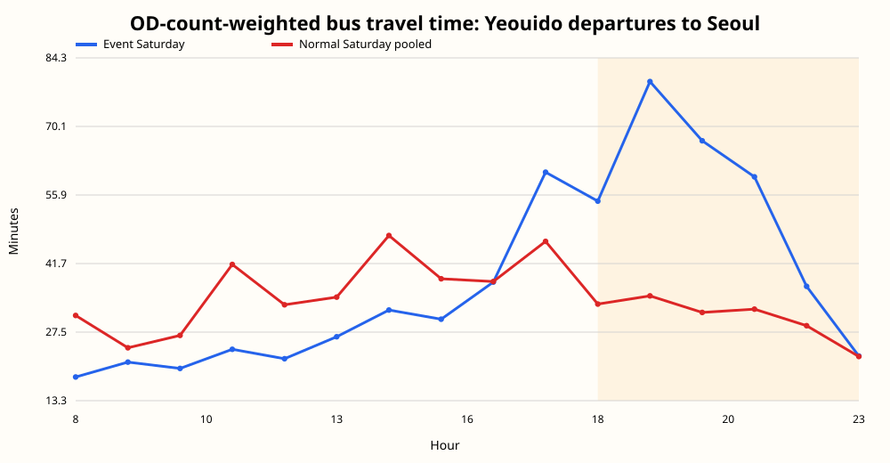
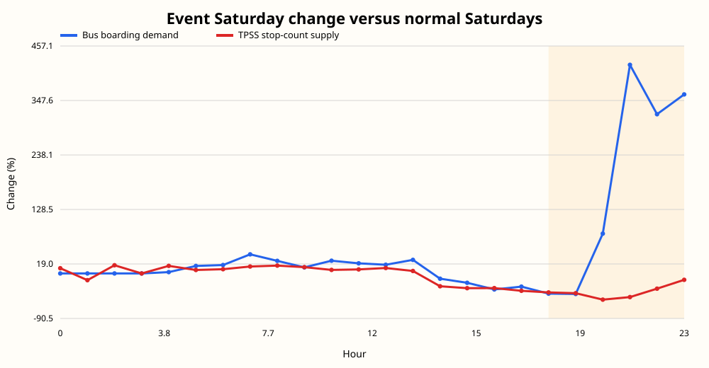
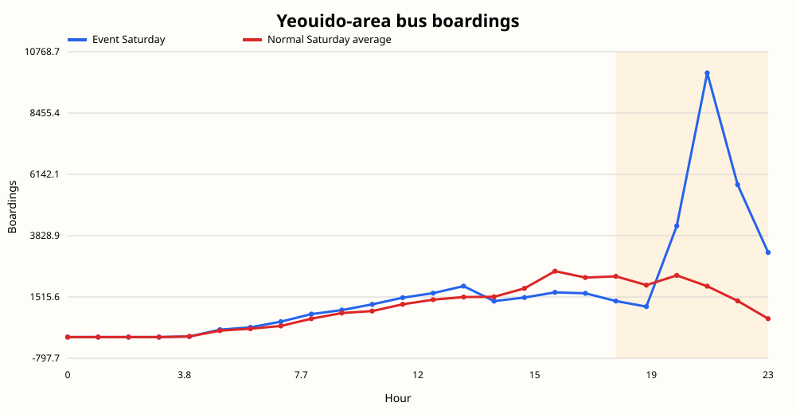
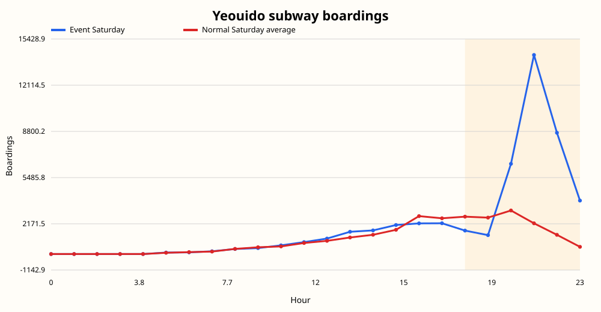
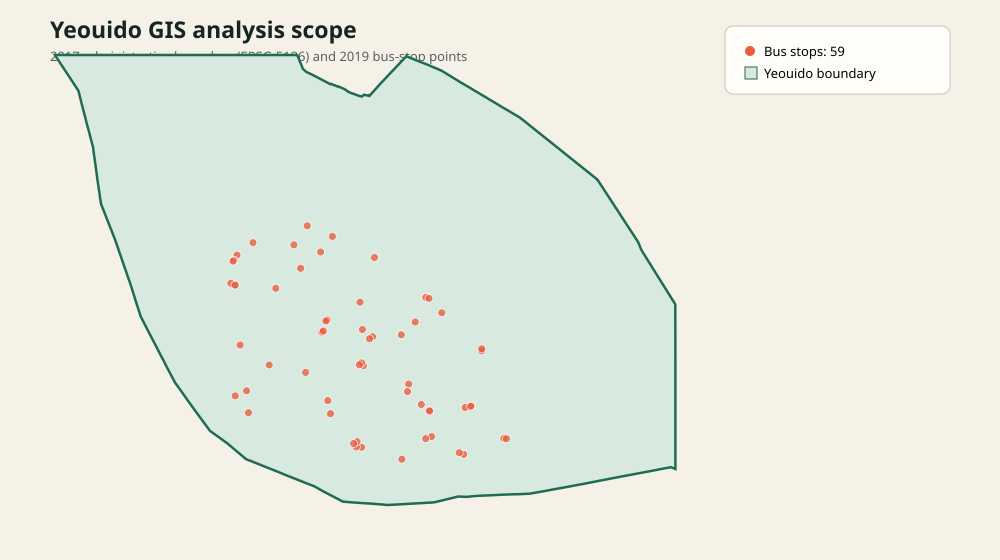

버스 OD 이동시간+31.99분18~23시 여의도 출발, OD 건수 가중평균
버스 승차 관측치+142.4%25626 대 10570.3
지하철 승차 관측치+190.0%36346 대 12532.0
TPSS 정차횟수-37.4%5973 대 9544.7
분석 질문
불꽃축제 뒤 길어진 귀가 시간을 방문객 증가만으로 설명할 수 있을까? 행사 종료 전후의 수요 관측치, 버스 정차횟수와 이동시간을 같은 시간대에 놓고 비교했습니다.
주요 결과




공급 회복 스트레스 테스트
| 18~23시 지표 | 값 |
|---|---|
| 현재 행사일 수요/공급 부담 ÷ 평상시 부담 | 3.87배 |
| 정차횟수를 평상시 수준으로 회복한 뒤 부담 | 2.42배 |
| 평상시 정차횟수까지의 차이 | 3571.7 정차횟수 지표 |
이 계산은 관측된 정차횟수 지표를 사용한 설명적 스트레스 테스트입니다. 실제 버스 대수, 최적 배차, 정책의 인과효과를 뜻하지 않습니다.
진단에서 운영 가설로
정차횟수를 평상시 수준으로 회복해도 행사일의 수요 부담이 남는다는 점검을 바탕으로, 발표에서는 공덕·당산·노량진역까지 외곽 환승거점 셔틀을 운행하는 방안을 제안했습니다. 귀가 수요가 모이는 위치를 바꾸고 기존 철도망으로 분산하는 구상입니다.
거점 위치, 차량 대수, 수송인원, 비용과 시간 절감 효과는 현재 공개 분석으로 검증하지 않았습니다. 셔틀의 현재 위치는 운영 가설이며, 정책 효과 검증은 후속 과제입니다.
GIS 범위와 결합 감사

행정동 경계 내부의 2019년 버스정류장 59개를 추출했습니다. 버스 30분 자료는 정규화한 정류장명, TPSS는 GIS 정류장 ID의 정확 일치만 사용했습니다. 누락과 중복은 join audit에 남겼습니다.
재현
python run_all.py 이후 python validate_release.py를 실행합니다. 원시자료는 라이선스와 개인정보 고려로 포함하지 않았고, 공개 폴더에는 날짜·시간 집계본만 제공합니다.
GitHub 저장소 · 방법론 · 모델 선택 기준